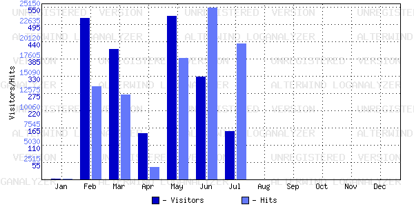

AlterWind Log Analyzer Report
Time Period: 1/31/2005 9:41:36 PM - 7/18/2005 2:15:42 AM
Report Template: General
Average Activity by Month

Month
Hits
Reloads
Cached
Incomplete
Requests
Visitors
Data transfer(KB)
January
183
22
86
0
2
600
February
13655
2845
2623
1
516
63480
March
12409
3179
3355
0
416
47662
April
1860
275
310
0
149
7091
May
17787
14817
1371
4
522
104903
June
25148
4460
5166
3
329
47429
July
19853
7272
2113
1
154
28291
August
0
0
0
0
0
0
September
0
0
0
0
0
0
October
0
0
0
0
0
0
November
0
0
0
0
0
0
December
0
0
0
0
0
0
Description:
Allows you to see average visitors activity for every month.